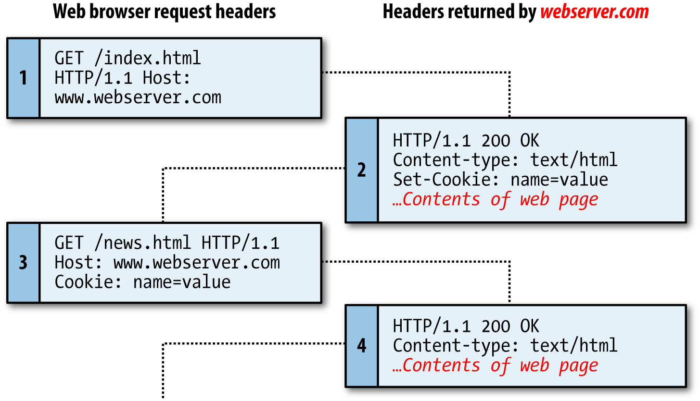
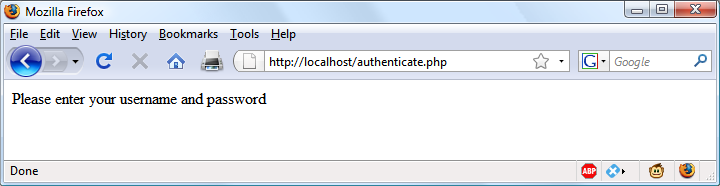
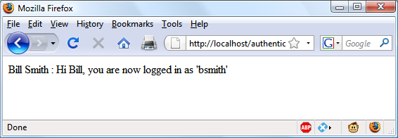
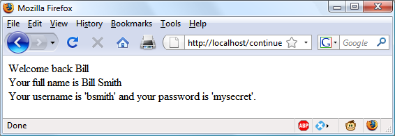

Cookies, Sessions, and Authentication
As your web projects grow larger and more complicated, you will find an increasing need to keep track of your users. Even if you aren’t offering logins and passwords, you will still often need to store details about a user’s current session and possibly also recognize her when she returns to your site.
Several technologies support this kind of interaction, ranging from simple browser cookies to session handling and HTTP authentication. Between them, they offer the opportunity for you to configure your site to your users’ preferences and ensure a smooth and enjoyable transition through it.
Using Cookies in PHP
A cookie is an item of data that a web server saves to your computer’s hard disk via a web browser. It can contain almost any alphanumeric information (as long as it’s under 4 KB) and can be retrieved from your computer and returned to the server. Common uses include session tracking, maintaining data across multiple visits, holding shopping cart contents, storing login details, and more.
Because of their privacy implications, cookies can be read only from the issuing domain. In other words, if a cookie is issued by, for example, oreilly.com , it can be retrieved only by a web server using that domain. This prevents other websites from gaining access to details for which they are not authorized.
Because of the way the Internet works, multiple elements on a web page can be embedded from multiple domains, each of which can issue its own cookies. When this happens, they are referred to as third-party cookies . Most commonly, these are created by advertising companies in order to track users across multiple websites.
Because of this, most browsers allow users to turn cookies off either for the current server’s domain, third-party servers, or both. Fortunately, most people who disable cookies do so only for third-party websites.
Cookies are exchanged during the transfer of headers, before the actual HTML of a web page is sent, and it is impossible to send a cookie once any HTML has been transferred. Therefore, careful planning of cookie usage is important. Figure 12-1 illustrates a typical request and response dialog between a web browser and web server passing cookies.

Figure 12-1. A browser/server request/response dialog with cookies
This exchange shows a browser receiving two pages:
1. The browser issues a request to retrieve the main page, index.html , at the website http://www.webserver.com . The first header specifies the file, and the second header specifies the server.
2. When the web server at webserver.com receives this pair of headers, it returns some of its own. The second header defines the type of content to be sent ( text/ html ), and the third one sends a cookie of the name name and with the value value . Only then are the contents of the web page transferred.
3. Once the browser has received the cookie, it will then return it with every future request made to the issuing server until the cookie expires or is deleted. So, when the browser requests the new page /news.html , it also returns the cookie name with the value value .
4. Because the cookie has already been set, when the server receives the request to send /news.html , it does not have to resend the cookie, but just returns the requested page.
Setting a Cookie
Setting a cookie in PHP is a simple matter. As long as no HTML has yet been transferred, you can call the setcookie function, which has the following syntax (see Table 12-1 ):
setcookie(name, value, expire, path, domain, secure, httponly);
Table 12-1. The setcookie parameters
| Parameter |
Description |
Example |
name |
| The name of the cookie. This is the name that your server will use to access the |
cookie on subsequent browser requests. |
username |
| value |
The value of the cookie, or the cookie’s contents. This can contain up to 4 KB of alphanumeric text. |
Hannah |
| expire |
(Optional.) Unix timestamp of the expiration date. Generally, you will probably use time() plus a number of seconds. If not set, the cookie expires when the browser closes. |
time() + 2592000 |
| path |
(Optional.) The path of the cookie on the server. If this is a
/
(forward slash), the
cookie is available over the entire domain, such as
www.webserver.com
. If it is a
subdirectory, the cookie is available only within that subdirectory. The default is
the current directory that the cookie is being set in, and this is the setting you will
normally use.
|
/ |
| domain |
(
Optional.
) The Internet domain of the cookie. If this is
.webserver.com
, the cookie is
available to all of
webserver.com
and its subdomains, such as
www.webserver.com
and
images.webserver.com
. If it is
images.webserver.com
, the cookie is available
only to
images.webserver.com
and its subdomains such as
sub.images.webserver.com
, but not, say, to
www.webserver.com
. |
.webserver.com |
| secure |
(
Optional.
) Whether the cookie must use a secure connection (
https://
). If this value
is
TRUE
, the cookie can be transferred only across a secure connection. The default
is
FALSE
. |
FALSE |
| httponly |
(
Optional
; implemented since PHP version 5.2.0.) Whether the cookie must use the
HTTP protocol. If this value is
TRUE
, scripting languages such as JavaScript cannot
access the cookie. (Not supported in all browsers.) The default is
FALSE
. |
FALSE |
So, to create a cookie with the name username and the value Hannah that is accessible across the entire web server on the current domain, and will be removed from the browser’s cache in seven days, use the following:
setcookie('username', 'Hannah', time() + 60 * 60 * 24 * 7, '/');
Accessing a Cookie
Reading the value of a cookie is as simple as accessing the $_COOKIE system array. For example, if you wish to see whether the current browser has the cookie called user name already stored and, if so, to read its value, use the following:
if (isset($_COOKIE['username'])) $username = $_COOKIE['username'];
Note that you can read a cookie back only after it has been sent to a web browser. This means that when you issue a cookie, you cannot read it in again until the browser reloads the page (or another with access to the cookie) from your website and passes the cookie back to the server in the process.
Destroying a Cookie
To delete a cookie, you must issue it again and set a date in the past. It is important for all parameters in your new setcookie call except the timestamp to be identical to the parameters when the cookie was first issued; otherwise, the deletion will fail. Therefore, to delete the cookie created earlier, you would use the following:
setcookie('username', 'Hannah', time() - 2592000, '/');
As long as the time given is in the past, the cookie should be deleted. However, I have used a time of 2,592,000 seconds (one month) in the past in case the client computer’s date and time are not correctly set.
HTTP Authentication
HTTP authentication uses the web server to manage users and passwords for the application. It’s adequate for most applications that ask users to log in, although some applications have specialized needs or more stringent security requirements that call for other techniques.
To use HTTP authentication, PHP sends a header request asking to start an authentication dialog with the browser. The server must have this feature turned on in order for it to work, but because it’s so common, your server is likely to offer the feature.
Although it is usually installed with Apache, HTTP authentication may not necessarily be installed on the server you use. So attempting to run these examples may generate an error telling you that the feature is not enabled, in which case you must install the module, change the configuration file to load the module, or ask your system administrator to do these fixes.
After entering your URL into the browser or visiting via a link, the user will see an “ Authentication Required” prompt pop up, requesting two fields: User Name and Password ( Figure 12-2 shows how this looks in Firefox).

Figure 12-2. An HTTP authentication login prompt
Example 12-1 shows the code to make this happen.
Example 12-1. PHP authentication
<?php
if (isset($_SERVER['PHP_AUTH_USER']) &&
isset($_SERVER['PHP_AUTH_PW']))
{
echo "Welcome User: " . $_SERVER['PHP_AUTH_USER'] .
" Password: " . $_SERVER['PHP_AUTH_PW'];
}
else
{
header('WWW-Authenticate: Basic realm="Restricted Section"');
header('HTTP/1.0 401 Unauthorized');
die("Please enter your username and password");
}
?>
By default, the type of interface Zend Server uses is cgi-fcgi , which is incompatible with basic authentication. However, configuring Zend is beyond the scope of this book, so if you are using it for Example 12-1 through Example 12-5 , you may prefer to test them on a different server. To determine the interface of a server, you can call the php_sapi_name function, which will return a string such as 'cgi-fcgi' , 'cli' , and so on. Basic authentication is not recommended anyway on a production website, as it is very insecure, but you need to know how it works for maintaining legacy code. Please refer to http://php.net/php_sapi_name for further details.
The first thing the program does is look for two particular array values: $_SERVER['PHP_AUTH_USER'] and $_SERVER['PHP_AUTH_PW'] . If they both exist, they represent the username and password entered by a user into an authentication prompt.
If either value does not exist, the user has not yet been authenticated and you display the prompt in Figure 12-2 by issuing the following header, where Basic realm is the name of the section that is protected and appears as part of the pop-up prompt:
WWW-Authenticate: Basic realm="Restricted Area"
If the user fills out the fields, the PHP program runs again from the top. But if the user clicks the Cancel button, the program proceeds to the following two lines, which send the following header and an error message:
HTTP/1.0 401 Unauthorized
The die statement causes the text “Please enter your username and password” to be displayed (see Figure 12-3 ).

Figure 12-3. The result of clicking the Cancel button
Once a user has been authenticated, you will not be able to get the authentication dialog to pop up again unless the user closes and reopens all browser windows, as the web browser will keep returning the same username and password to PHP. You may need to close and reopen your browser a few times as you work through this section and try different things out.
Now let’s check for a valid username and password. The code in Example 12-1 doesn’t require you to change much to add this check, other than modifying the previous welcome message code to test for a correct username and password, and then issuing a welcome message. A failed authentication causes an error message to be sent (see Example 12-2 ).
Example 12-2. PHP authentication with input checking
<?php
$username = 'admin';
$password = 'letmein';
if (isset($_SERVER['PHP_AUTH_USER']) &&
isset($_SERVER['PHP_AUTH_PW']))
{
if ($_SERVER['PHP_AUTH_USER'] == $username &&
$_SERVER['PHP_AUTH_PW'] == $password)
echo "You are now logged in";
else die("Invalid username / password combination");
}
else
{
header('WWW-Authenticate: Basic realm="Restricted Section"');
header('HTTP/1.0 401 Unauthorized');
die ("Please enter your username and password");
}
?>
Incidentally, take a look at the wording of the error message: Invalid username / password combination . It doesn’t say whether the username or the password or both were wrong—the less information you can give to a potential hacker, the better.
A mechanism is now in place to authenticate users, but only for a single username and password. Also, the password appears in clear text within the PHP file, and if someone managed to hack into your server, he would instantly know it. So let’s look at a better way to handle usernames and passwords.
Storing Usernames and Passwords
Obviously, MySQL is the natural way to store usernames and passwords. But again, we don’t want to store the passwords as clear text, because our website could be compromised if the database were accessed by a hacker. Instead, we’ll use a neat trick called a one-way function .
This type of function is easy to use and converts a string of text into a seemingly random string. Because of their one-way nature, such functions are virtually impossible to reverse, so their output can be safely stored in a database—and anyone who steals it will be none the wiser as to the passwords used.
In previous editions of this book, I recommended using the md5 hashing algorithm for your data security. Time marches on, however, and now md5 is considered easily hackable and therefore unsafe, while even its previously recommended replacement of sha1 can apparently be hacked (plus sha1 and sha2 were designed by the NSA and therefore considerable caution is recommended for their use in highly secure implementations).
So now I have moved on to using the PHP hash function, passing it a version of the ripemd algorithm, which was designed by the open academic community and which (like md5) returns a 32-character hexadecimal number—so it can easily replace md5 in most databases. Use it like this:
$token = hash('ripemd128', 'mypassword');
That example happens to give $token this value:
7b694600c8a2a2b0897c719958713619
By using the hash function, you can keep up with future developments in security and simply pass the hashing algorithm to it that you wish to implement, resulting in less code maintenance (although you will probably have to accommodate larger hash lengths than 32 characters in your databases).
Salting
Unfortunately, hash on its own is not enough to protect a database of passwords, because it could still be susceptible to a brute force attack that uses another database of known 32-character hexadecimal tokens. Such databases do exist, as a quick Google search will verify, although probably only for md5 and sha1 or sha2 at the moment.
Thankfully, though, we can put a spanner in the works of any such attempts by salting all the passwords before they are sent to hash . Salting is simply a matter of adding some text that only we know about to each parameter to be encrypted, like this (with the salt highlighted in bold):
$token = hash('ripemd128', 'saltstringmypassword');
In this example, the text saltstring has been prepended to the password. Of course, the more obscure you can make the salt, the better. I like to use salts such as this:
$token = hash('ripemd128', ' hqb%$tmypasswordcg*l');
Here some random characters have been placed both before and after the password. Given just the database, and without access to your PHP code, it should now be next to impossible to work out the stored passwords.
All you have to do when verifying someone’s login password is to add these same random strings back in before and after it, and then check the resulting token from a hash call against the one stored in the database for that user.
Let’s create a MySQL table to hold some user details and add a couple of accounts. So type and save the program in Example 12-3 as setupusers.php , and then open it in your browser.
Example 12-3. Creating a users table and adding two accounts
<?php // setupusers.php
require_once 'login.php';
$connection = new mysqli($db_hostname, $db_username, $db_password, $db_database);
if ($connection->connect_error) die($connection->connect_error);
$query = "CREATE TABLE users (
forename VARCHAR(32) NOT NULL,
surname VARCHAR(32) NOT NULL,
username VARCHAR(32) NOT NULL UNIQUE,
password VARCHAR(32) NOT NULL
)";
$result = $connection->query($query);
if (!$result) die($connection->error);
$salt1 = "qm&h*";
$salt2 = "pg!@";
$forename = 'Bill';
$surname = 'Smith';
$username = 'bsmith';
$password = 'mysecret';
$token = hash('ripemd128', "$salt1$password$salt2");
add_user($connection, $forename, $surname, $username, $token);
$forename = 'Pauline';
$surname = 'Jones';
$username = 'pjones';
$password = 'acrobat';
$token = hash('ripemd128', "$salt1$password$salt2");
add_user($connection, $forename, $surname, $username, $token);
function add_user($connection, $fn, $sn, $un, $pw)
{
$query = "INSERT INTO users VALUES('$fn', '$sn', '$un', '$pw')";
$result = $connection->query($query);
if (!$result) die($connection->error);
}
?>
This program will create the table users within your publications database (or whichever database you set up for the login.php file in Chapter 10 ). In this table, it will create two users: Bill Smith and Pauline Jones. They have the usernames and passwords of bsmith/mysecret and pjones/acrobat , respectively.
Using the data in this table, we can now modify Example 12-2 to properly authenticate users, and Example 12-4 shows the code needed to do this. Type it, save it as authenticate.php , and call it up in your browser.
Example 12-4. PHP authentication using MySQL
<?php // authenticate.php
require_once 'login.php';
$connection = new mysqli($db_hostname, $db_username, $db_password, $db_database);
if ($connection->connect_error) die($connection->connect_error);
if (isset($_SERVER['PHP_AUTH_USER']) &&
isset($_SERVER['PHP_AUTH_PW']))
{
$un_temp = mysql_entities_fix_string($connection, $_SERVER['PHP_AUTH_USER']);
$pw_temp = mysql_entities_fix_string($connection, $_SERVER['PHP_AUTH_PW']);
$query = "SELECT * FROM users WHERE username='$un_temp'";
$result = $connection->query($query);
if (!$result) die($connection->error);
elseif ($result->num_rows)
{
$row = $result->fetch_array(MYSQLI_NUM);
$result->close();
$salt1 = "qm&h*";
$salt2 = "pg!@";
$token = hash('ripemd128', "$salt1$pw_temp$salt2");
if ($token == $row[3]) echo "$row[0] $row[1] : Hi $row[0], you are now logged in as '$row[2]'";
else die("Invalid username/password combination");
}
else die("Invalid username/password combination");
}
else
{
header('WWW-Authenticate: Basic realm="Restricted Section"');
header('HTTP/1.0 401 Unauthorized');
die ("Please enter your username and password");
}
$connection->close();
function mysql_entities_fix_string($connection, $string)
{
return htmlentities(mysql_fix_string($connection, $string));
}
function mysql_fix_string($connection, $string)
{
if (get_magic_quotes_gpc()) $string = stripslashes($string);
return $connection->real_escape_string($string);
}
?>
As you might expect at this point in the book, some of these examples are starting to get quite a bit longer. But don’t be put off. The final 10 lines are simply Example 10-22 from Chapter 10 . They are there to sanitize the user input—very important.
The only lines to really concern yourself with at this point start with the assigning of two variables, $un_temp and $pw_temp , using the submitted username and password, highlighted in bold text. Next, a query is issued to MySQL to look up the user $un_temp and, if a result is returned, to assign the first row to $row . (Because user‐ names are unique, there will be only one row.) Then the two salts are created in $salt1 and $salt2 , which are then added before and after the submitted password $pw_temp . This string is then passed to the hash function, which returns a 32- character hexadecimal value in $token .
Now all that’s necessary is to check $token against the value stored in the database, which happens to be in the fourth column—which is column 3 when starting from 0. So $row[3] contains the previous token calculated for the salted password. If the two match, a friendly welcome string is output, calling the user by his or her first name (see Figure 12-4 ). Otherwise, an error message is displayed. As mentioned before, the error message is the same regardless of whether such a username exists, as this provides minimal information to potential hackers or password guessers.

Figure 12-4. Bill Smith has now been authenticated
You can try this out for yourself by calling up the program in your browser and entering a username of bsmith and password of mysecret (or pjones and acrobat ), the values that were saved in the database by Example 12-3 .
By sanitizing input immediately after it is encountered, you will block any malicious HTML, JavaScript, or MySQL attacks before they can get any further, and will not have to sanitize this data again. Remember, however, that if a user has characters such as < or & in a password (for example), these will be expanded to < or & by the htmlemtities function. But as long as your code allows for strings that may end up larger than the provided input width, and as long as you always run passwords through this sanitization, you’ll be just fine.
Using Sessions
Because your program can’t tell what variables were set in other programs—or even what values the same program set the previous time it ran—you’ll sometimes want to track what your users are doing from one web page to another. You can do this by setting hidden fields in a form, as seen in Chapter 10 , and checking the value of the fields after the form is submitted, but PHP provides a much more powerful and simpler solution in the form of sessions . These are groups of variables that are stored on the server but relate only to the current user. To ensure that the right variables are applied to the right users, PHP saves a cookie in the users’ web browsers to uniquely identify them.
This cookie has meaning only to the web server and cannot be used to ascertain any information about a user. You might ask about those users who have their cookies turned off. Well, that’s not a problem as of PHP 4.2.0, because it will identify when this is the case and place a cookie token in the Get portion of each URL request instead. Either way, sessions provide a solid way of keeping track of your users.
Starting a Session
Starting a session requires calling the PHP function session_start before any HTML has been output, similarly to how cookies are sent during header exchanges. Then, to begin saving session variables, you just assign them as part of the $_SESSION array, like this:
$_SESSION['variable'] = $value;
They can then be read back just as easily in later program runs, like this:
$variable = $_SESSION['variable'];
Now assume that you have an application that always needs access to the username, password, first name, and last name of each user, as stored in the table users , which you should have created a little earlier. So let’s further modify authenticate.php from Example 12-4 to set up a session once a user has been authenticated.
Example 12-5 shows the changes needed. The only difference is the content of the if ($token == $row[3]) section, which we now start by opening a session and saving these four variables into it. Type this program (or modify Example 12-4 ) and save it as authenticate2.php . But don’t run it in your browser yet, as you will also need to create a second program in a moment.
Example 12-5. Setting a session after successful authentication
<?php //authenticate2.php
require_once 'login.php';
$connection = new mysqli($db_hostname, $db_username, $db_password, $db_database);
if ($connection->connect_error) die($connection->connect_error);
if (isset($_SERVER['PHP_AUTH_USER']) &&
isset($_SERVER['PHP_AUTH_PW']))
{
$un_temp = mysql_entities_fix_string($connection, $_SERVER['PHP_AUTH_USER']);
$pw_temp = mysql_entities_fix_string($connection, $_SERVER['PHP_AUTH_PW']);
$query = "SELECT * FROM users WHERE username='$un_temp'";
$result = $connection->query($query);
if (!$result) die($connection->error);
elseif ($result->num_rows)
{
$row = $result->fetch_array(MYSQLI_NUM);
$result->close();
$salt1 = "qm&h*";
$salt2 = "pg!@";
$token = hash('ripemd128', "$salt1$pw_temp$salt2");
if ($token == $row[3])
{
session_start();
$_SESSION['username'] = $un_temp;
$_SESSION['password'] = $pw_temp;
$_SESSION['forename'] = $row[0];
$_SESSION['surname'] = $row[1];
echo "$row[0] $row[1] : Hi $row[0], you are now logged in as '$row[2]'";
die ("<p><a href=continue.php>Click here to continue</a></p>");
}
else die("Invalid username/password combination");
}
else die("Invalid username/password combination");
}
else
{
header('WWW-Authenticate: Basic realm="Restricted Section"');
header('HTTP/1.0 401 Unauthorized');
die ("Please enter your username and password");
}
$connection->close();
function mysql_entities_fix_string($connection, $string)
{
return htmlentities(mysql_fix_string($connection, $string));
}
function mysql_fix_string($connection, $string)
{
if (get_magic_quotes_gpc()) $string = stripslashes($string);
return $connection->real_escape_string($string);
}
?>
One other addition to the program is the “Click here to continue” link with a destination URL of continue.php . This will be used to illustrate how the session will transfer to another program or PHP web page. So create continue.php by typing the program in Example 12-6 and saving it.
Example 12-6. Retrieving session variables
<?php // continue.php
session_start();
if (isset($_SESSION['username']))
{
$username = $_SESSION['username'];
$password = $_SESSION['password'];
$forename = $_SESSION['forename'];
$surname = $_SESSION['surname'];
echo "Welcome back $forename.<br>
Your full name is $forename $surname.<br>
Your username is '$username'
and your password is '$password'.";
}
else echo "Please <a href='authenticate2.php'>click here</a> to log in.";
?>
Now you are ready to call up authenticate2.php into your browser. Enter a username of bsmith and password of mysecret (or pjones and acrobat ) when prompted, and click the link to load in continue.php . When your browser calls it up, the result should be something like Figure 12-5 .

Figure 12-5. Maintaining user data with sessions
Sessions neatly confine to a single program the extensive code required to authenticate and log in a user. Once a user has been authenticated, and you have created a session, your program code becomes very simple indeed. You need only to call up session_start and look up any variables to which you need access from $_SESSION .
In Example 12-6 , a quick test of whether $_SESSION['username'] has a value is enough to let you know that the current user is authenticated, because session variables are stored on the server (unlike cookies, which are stored on the web browser) and can therefore be trusted.
If $_SESSION['username'] has not been assigned a value, no session is active, so the last line of code in Example 12-6 directs users to the login page at authenticate2.php .
The continue.php program prints back the value of the user’s password to show you how session variables work. In practice, you already know that the user is logged in, so you shouldn’t need to keep track of (or display) any passwords, and in fact doing so would be a security risk.
Ending a Session
When the time comes to end a session, usually when a user requests to log out from your site, you can use the session_destroy function in association, as in Example 12-7 . That example provides a useful function for totally destroying a session, logging a user out, and unsetting all session variables.
Example 12-7. A handy function to destroy a session and its data
<?php
function destroy_session_and_data()
{
session_start();
$_SESSION = array();
setcookie(session_name(), '', time() - 2592000, '/');
session_destroy();
}
?>
To see this in action, you could modify continue.php as in Example 12-8 .
Example 12-8. Retrieving session variables and then destroying the session
<?php
session_start();
if (isset($_SESSION['username']))
{
$username = $_SESSION['username'];
$password = $_SESSION['password'];
$forename = $_SESSION['forename'];
$surname = $_SESSION['surname'];
destroy_session_and_data();
echo "Welcome back $forename.<br>
Your full name is $forename $surname.<br>
Your username is '$username'
and your password is '$password'.";
}
else echo "Please <a href='authenticate2.php'>click here</a> to log in.";
function destroy_session_and_data()
{
$_SESSION = array();
setcookie(session_name(), '', time() - 2592000, '/');
session_destroy();
}
?>
The first time you navigate from authenticate2.php to continue.php , it will display all the session variables. But, because of the call to destroy_session_and_data , if you then click your browser’s Reload button, the session will have been destroyed and you’ll be prompted to return to the login page.
Setting a Time-Out
There are other times when you might wish to close a user’s session yourself, such as when the user has forgotten or neglected to log out, and you want the program to do so for her for her own security. You do this by setting the time-out after which a logout will automatically occur if there has been no activity.
To do this, use the ini_set function as follows. This example sets the time-out to exactly one day:
ini_set('session.gc_maxlifetime', 60 * 60 * 24);
If you wish to know what the current time-out period is, you can display it using the following:
echo ini_get('session.gc_maxlifetime');
Session Security
Although I mentioned that once you had authenticated a user and set up a session, you could safely assume that the session variables were trustworthy, this isn’t exactly the case. The reason is that it’s possible to use packet sniffing (sampling of data) to discover session IDs passing across a network. Additionally, if the session ID is passed in the Get part of a URL, it might appear in external site server logs. The only truly secure way of preventing these from being discovered is to implement Secure Sockets Layer (SSL) and run HTTPS instead of HTTP web pages. That’s beyond the scope of this book, although you may like to take a look at http://apache-ssl.org for details on setting up a secure web server.
Preventing session hijacking
When SSL is not a possibility, you can further authenticate users by storing their IP address along with their other details by adding a line such as the following when you store their session:
$_SESSION['ip'] = $_SERVER['REMOTE_ADDR'];
Then, as an extra check, whenever any page loads and a session is available, perform the following check. It calls the function different_user if the stored IP address doesn’t match the current one:
if ($_SESSION['ip'] != $_SERVER['REMOTE_ADDR']) different_user();
What code you place in your different_user function is up to you. I recommend that you simply delete the current session and ask the user to log in again due to a technical error. Don’t say any more than that, or you’re giving away potentially useful information.
Of course, you need to be aware that users on the same proxy server, or sharing the same IP address on a home or business network, will have the same IP address. Again, if this is a problem for you, use SSL. You can also store a copy of the browser user agent string (a string that developers put in their browsers to identify them by type and version), which might also distinguish users due to the wide variety of browser types, versions, and computer platforms. Use the following to store the user agent:
$_SESSION['ua'] = $_SERVER['HTTP_USER_AGENT'];
And use this to compare the current agent string with the saved one: if ($_SESSION['ua'] != $_SERVER['HTTP_USER_AGENT']) different_user(); Or, better still, combine the two checks like this and save the combination as a hash hexadecimal string:
$_SESSION['check'] = hash('ripemd128', $_SERVER['REMOTE_ADDR']
$_SERVER['HTTP_USER_AGENT']);
And use this to compare the current and stored strings:
if ($_SESSION['check'] != hash('ripemd128', $_SERVER['REMOTE_ADDR']
$_SERVER['HTTP_USER_AGENT'])) different_user();
Preventing session fixation
Session fixation happens when a malicious user tries to present a session ID to the server rather than letting the server create one. It can happen when a user takes advantage of the ability to pass a session ID in the Get part of a URL, like this:
http://yourserver.com/authenticate.php?PHPSESSID=123456789
In this example, the made-up session ID of 123456789 is being passed to the server. Now, consider Example 12-9 , which is susceptible to session fixation. To see how, type it and save it as sessiontest.php .
Example 12-9. A session susceptible to session fixation
<?php // sessiontest.php
session_start();
if (!isset($_SESSION['count'])) $_SESSION['count'] = 0;
else ++$_SESSION['count'];
echo $_SESSION['count'];
?>
Once it’s saved, call it up in your browser using the following URL (prefacing it with the correct pathname, such as http://localhost/web/ ):
sessiontest.php?PHPSESSID=1234
Press Reload a few times, and you’ll see the counter increase. Now try browsing to
sessiontest.php?PHPSESSID=5678
Press Reload a few times here, and you should see it count up again from 0. Leave the counter on a different number than the first URL and then go back to the first URL and see how the number changes back. You have created two different sessions of your own choosing here, and you could easily create as many as you needed.
The reason this approach is so dangerous is that a malicious attacker could try to distribute these types of URLs to unsuspecting users, and if any of them followed these links, the attacker would be able to come back and take over any sessions that had not been deleted or expired!
To prevent this, add a simple check to change the session ID using session_regener ate_id . This function keeps all current session variable values, but replaces the session ID with a new one that an attacker cannot know.
To do this, check for a special session variable that you arbitrarily invent. If it doesn’t exist, you know that this is a new session, so you simply change the session ID and set the special session variable to note the change. Example 12-10 shows how the code to do this might look, using the session variable initiated .
Example 12-10. Session regeneration
<?php
session_start();
if (!isset($_SESSION['initiated']))
{
session_regenerate_id();
$_SESSION['initiated'] = 1;
}
if (!isset($_SESSION['count'])) $_SESSION['count'] = 0;
else ++$_SESSION['count'];
echo $_SESSION['count'];
?>
This way, an attacker can come back to your site using any of the session IDs that he or she generated, but none of them will call up another user’s session, as they will all have been replaced with regenerated IDs. If you want to be ultra-paranoid, you can even regenerate the session ID on each request.
Forcing cookie-only sessions
If you are prepared to require your users to enable cookies on your website, you can use the ini_set function, like this:
ini_set('session.use_only_cookies', 1);
With that setting, the ?PHPSESSID= trick will be completely ignored. If you use this security measure, I also recommend that you inform your users that your site requires cookies, so they know what’s wrong if they don’t get the results they want.
Using a shared server
On a server shared with other accounts, you will not want to have all your session data saved into the same directory as theirs. Instead, you should choose a directory to which only your account has access (and that is not web-visible) to store your sessions, by placing an ini_set call near the start of a program, like this:
ini_set('session.save_path', '/home/user/myaccount/sessions');
The configuration option will keep this new value only during the program’s execution, and the original configuration will be restored at the program’s ending.
This sessions folder can fill up quickly; you may wish to periodically clear out older sessions according to how busy your server gets. The more it’s used, the less time you will want to keep a session stored.
Remember that your websites can and will be subject to hacking attempts. There are automated bots running riot around the Internet, trying to find sites vulnerable to exploits. So whatever you do, whenever you are handling data that is not 100 percent generated within your own program, you should always treat it with the utmost caution.
At this point, you should now have a very good grasp of both PHP and MySQL, so in the next chapter it’s time to introduce the third major technology covered by this book, JavaScript.